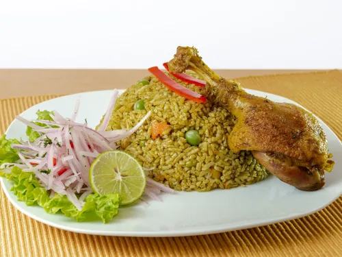
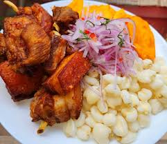
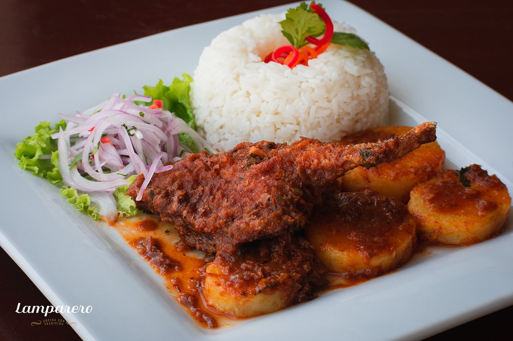
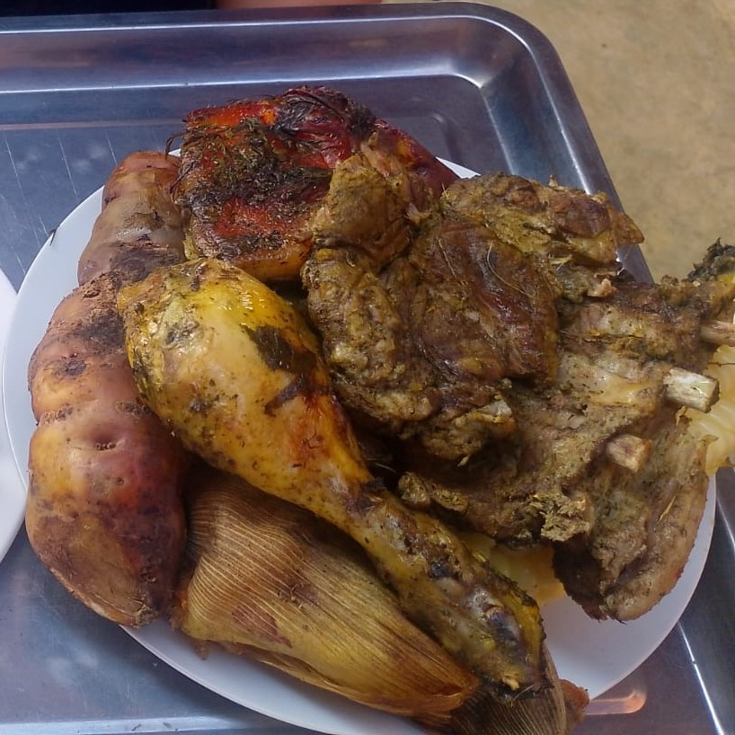
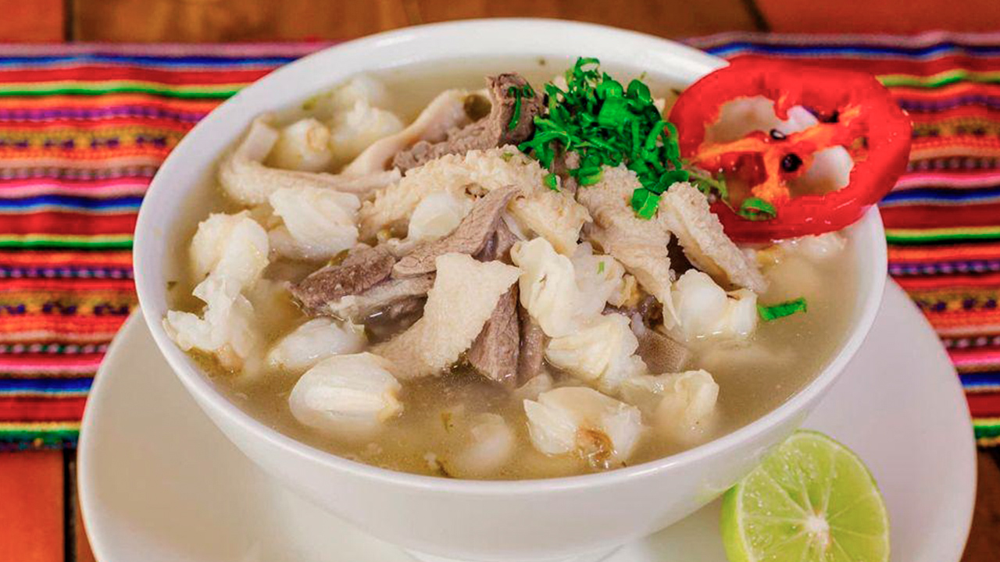
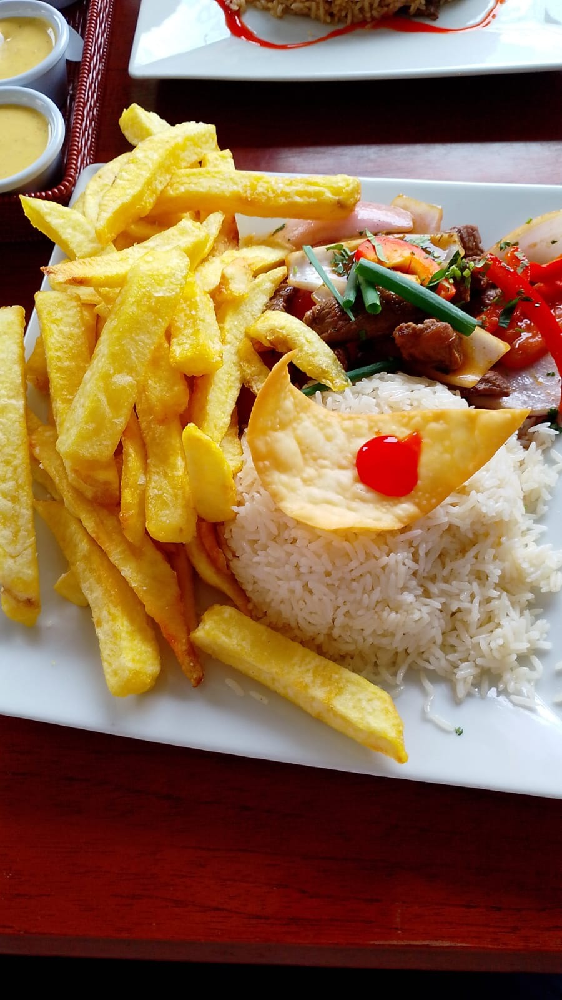
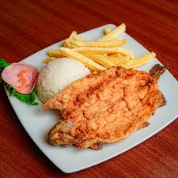
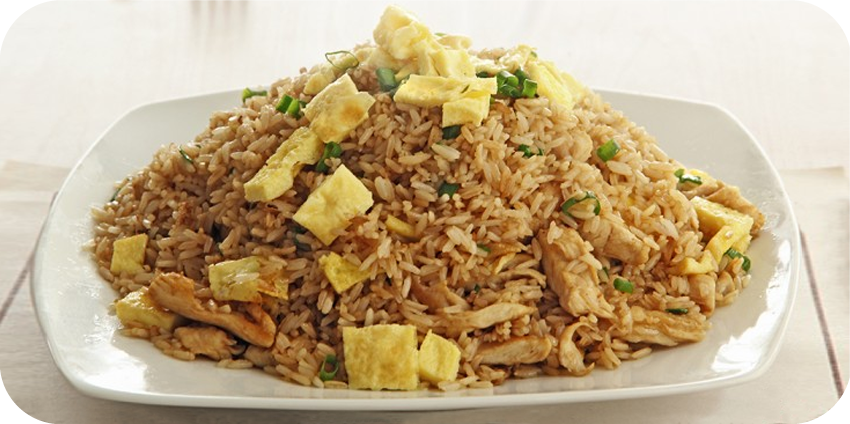
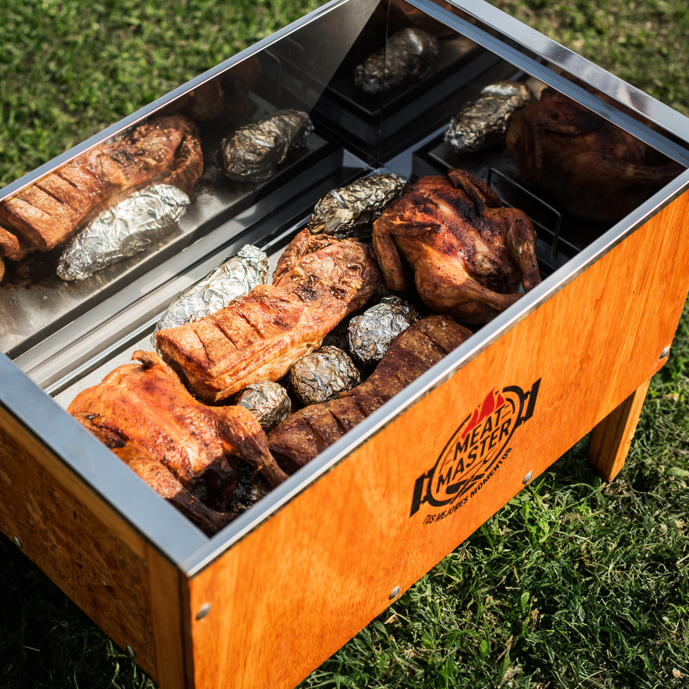
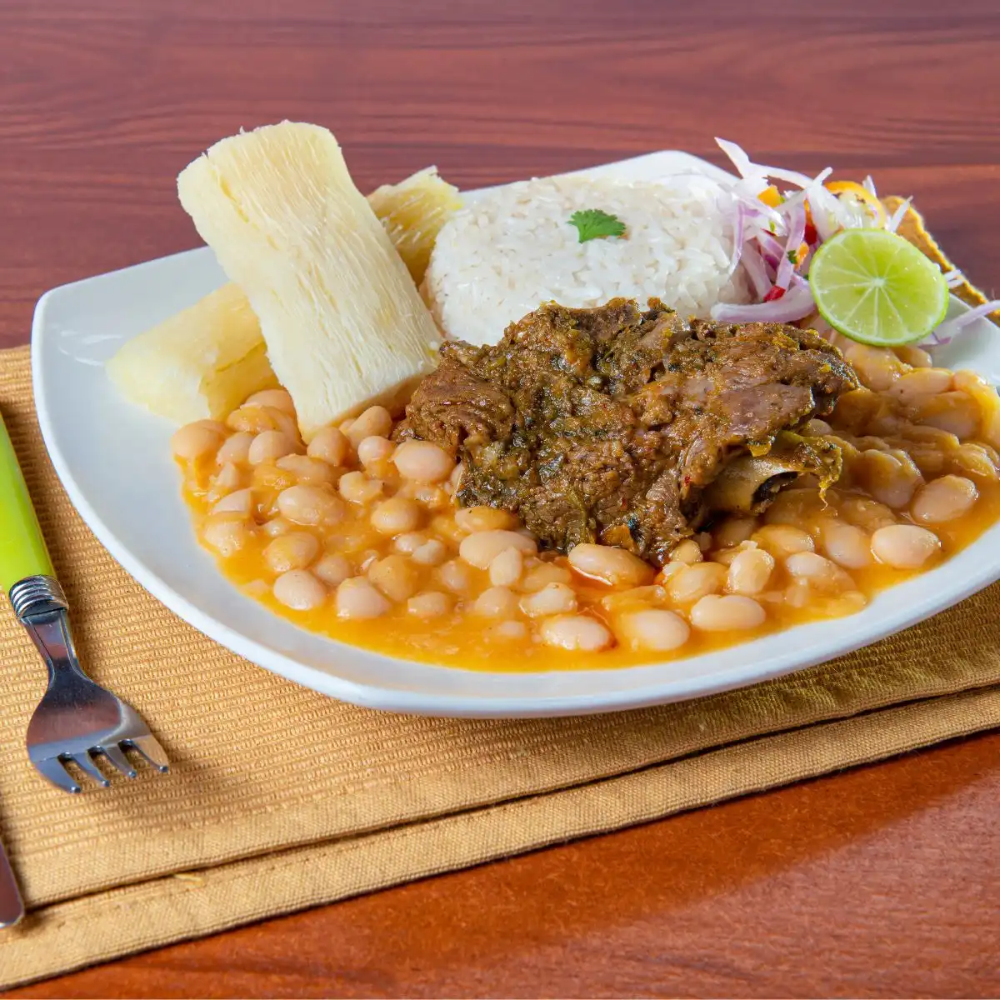

Platos típicos, bebidas tradicionales, gaseosas, agua y cervezas.
Sabores tradicionales para disfrutar en familia.

Plato sabroso y contundente para compartir.

Crocante y con acompañamientos tradicionales.

Especialidad típica preparada al estilo casero.

Tradicional plato andino lleno de sabor.

Sopa tradicional ideal para los amantes de la comida típica.

Clásico peruano con carne, papas y arroz.

Trucha dorada con guarniciones frescas.

Delicioso chaufa para grandes y pequeños.

Carne crocante y jugosa preparada al estilo tradicional.

Plato peruano lleno de sabor y sazón.